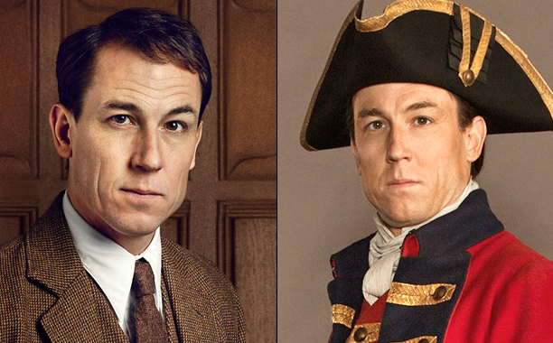

Outlander by Diana Gabaldon is by far the best book series I have ever read in my entire life. It is jam packed full of history, adventure, trauma, true love and most importantly time travel.

Claire and Jamie are the fated lovers in this series. Claire accidentally travels through a standing stone circle in 1945 in the Scottish Highlands and ends up in 1743. She stumbles upon the Scots when running from the English army, in particular an English officer called Black Jack Randall who bares a striking resemblance to her husband back in 1945. The Scots take her in as a protection for herself and for them as they believe she could be a spy for the English being English herself. Claire struggles to fit in in the 18th century and continually gets into trouble due to her foul language, her views on men and her healing ability as it was unheard of for women to be doctors in that time. Jamie and herself form a friendship after she heals his injuries from fighting with the English. Jamie, as it turns out is also running from the English Officer Black Jack as he has a personal vendetta against him. In order to protect both Jamie and Claire from Black Jack, Jamie's uncle decides they should be married, reluctantly Claire agrees. After their marriage Claire slowly falls inlove with Jamie and Jamie reveals that he has had feelings for her since the first day they met.
The two of them go through so much together in the first 3 years they are married, which include moving to france and then back to Scotland and then failing to stop the uprising and Claire having to go back to her original time in order to save their unborn child. She then raises Brianna, who is named for Jamie's father, with Frank in America due to Frank's job being there. Claire then becomes a doctor and stays with Frank until his death when Bri was 19. They then
This is Frank Randall on the left and Jonathan Wolverton Randall (Black Jack) on the right. Frank is Claire's first husband whom she left in 1945. Claire did and still does love Frank despite her love for Jamie. Frank is a kind and selfless man that takes her back after her 3 year disappearance and return pregnant with Jamie's baby and they remain together for 20 years to raise her. The man on the right, Black Jack, is one of the most evil men in the series. He is a predator and hold a special liking for Jamie, he makes it his lifes mission to hunt Jamie and make him his, willing or not.
Gellis Duncan is a self proclaimed witch and a time traveller. Geillis lives in Cranesmuir, the little town located just outside Castle Leoch where Jamie's uncle is the Laird. She lives with her wealthy and well known husband. She is one of the first people to befriend Claire and kind of give her intel on the townspeople and useful plants and herbs. The thing about Geillis is that it is unclear whether she is or is not a good person, especially in the first book. Claire and Geillis both end up being tried as witches in the townsquare where Claire is eventually saved by Geillis telling the people she was really a witch and she influenced Claire to help her with herbs but that she is not a witch herself. Jamie ultimately comes to grab Claire and Geillis reveals her upper arm to Claire to show her her vaccination scar, which proves that she came from a time with vaccinations. Claire later learns she came from 1967.
This is Jenny Murray, older sister to Jamie and wife to Jamie's bestfriend Ian Murray.
This is Laoghaire, she was in-love with Jamie before Claire came along, but the feelings were not reciprocated by Jamie, though he did lead her on by taking her punishment for lewd behaviour and then later made out with him in an alcove where Claire discovers them (before theyre married or even together) Claire thinks that they have a thing for eachother and tries to set them up but Jamie was not about it. Laoghaire is one of the absolute worst characters, it isn't her fault as Jamie did lead her on but she didn't have to set Claire up as a witch to try to get her killed. After the first book we really don'y expect to see her again but she ends up marrying Jamie after the rebellion but it doesn't work out as she had planned and she didn't love him as much as she thought. Laoghaire had 2 children in another marriage and sort of marries Jamie out of spite for claire and also necessity to keep her girls fed. This is how Jamie aquires Marsali as a Step-daughter.
Fergus is the adopted son of Jamie and Claire. They encountered a 10 year old Fergus when he tried to pick pocket Jamie in the streets of France, Jamie decided to employ him to steal letters for him and later decided with Claire that adopting the boy would be amazing for everyone involved. Marsali is the daughter of Laoghaire and her first husband, she becomes Jamie's step daughter when Jamie and Laoghaire married. Fergus and Marsali have a forbidden romance due to Laoghaire not approving of Fergus because he is missing a hand and also 15 years older than Marsali but the two decide to elope when Fergus goes with Jamie and Claire to Jamaica to save young Ian as Marsali secretly comes along. The two end up staying with Jamie and Claire all the way through to America and have 6 kids over the course of the 9 books.

Brianna is the daughter of Jamie and Claire Fraser. Bri was concieved in Scotland in 1745 but was born in America in 1948.

Ian Murray 'Junior' is arguably one of the best characters, we first meet him as a quirky 14 year old and he grows into a very galant young man over the course of the books

Roger is one of the worst characters, he isn't a bad man he is just annoying and has very few redeming qualities. To top it off he and Brianna end up married with 2 kids.